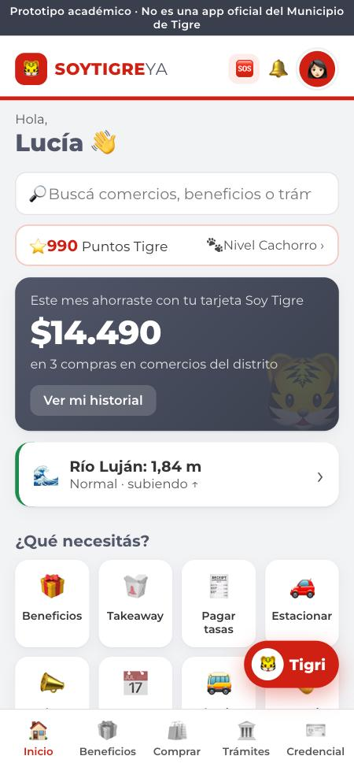

Trabajo Final Integrador · Diplomatura en Negocios Digitales e Innovación
SOYTIGREYA
Beneficios, comercio de barrio y trámites en una sola app.

Escaneá y probala
mila-ops-ia.github.io/soytigreya
Milagros Belén Sanabria · mila·ops · UNDelta · 2026

Prototipo académico · no es una app oficial del Municipio de Tigre1
El próximo paso
Firmemos el piloto
1Demo con Desarrollo Económico y Modernización
2Carta de intención y referente municipal
3Lanzamiento con 40 comercios en 6 semanas
Que el ahorro y la venta se queden en Tigre. ¡Gracias!
Escaneá y probala
mila-ops-ia.github.io/soytigreya
Milagros Belén Sanabria · mila·ops · Diplomatura en Negocios Digitales e Innovación10